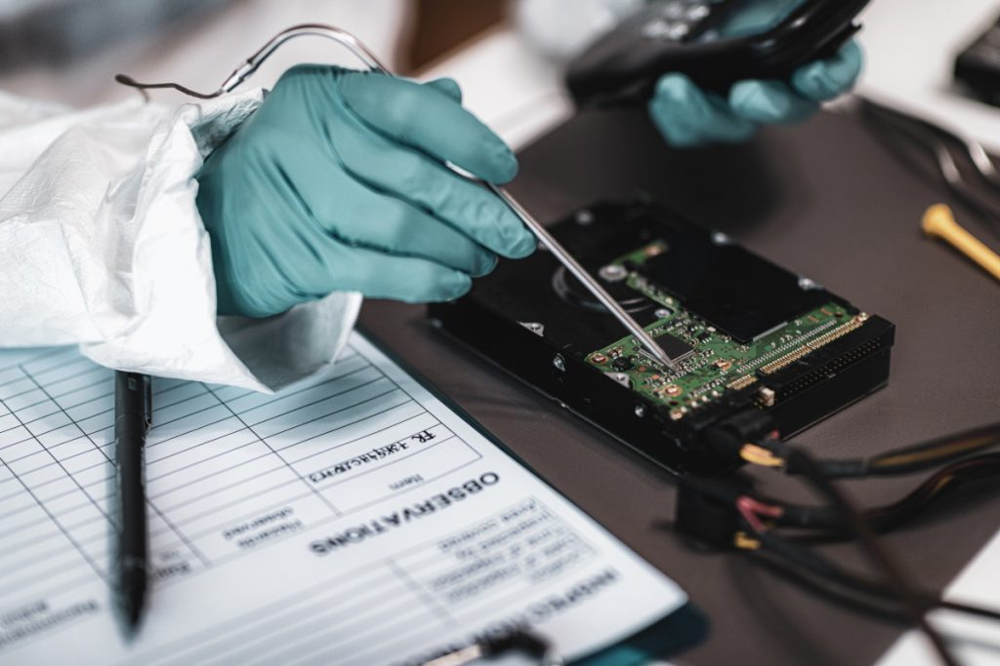

In the future I see myself working as a Digital Forensics Analyst.
A Ditigital Foresnsic Analyst is someone who analyzes ditital evidence to uncover information.
Uncovered information can be related to cybercrime.
Some of their resposibilities consist of:
How to Set up a digital forensics lab: